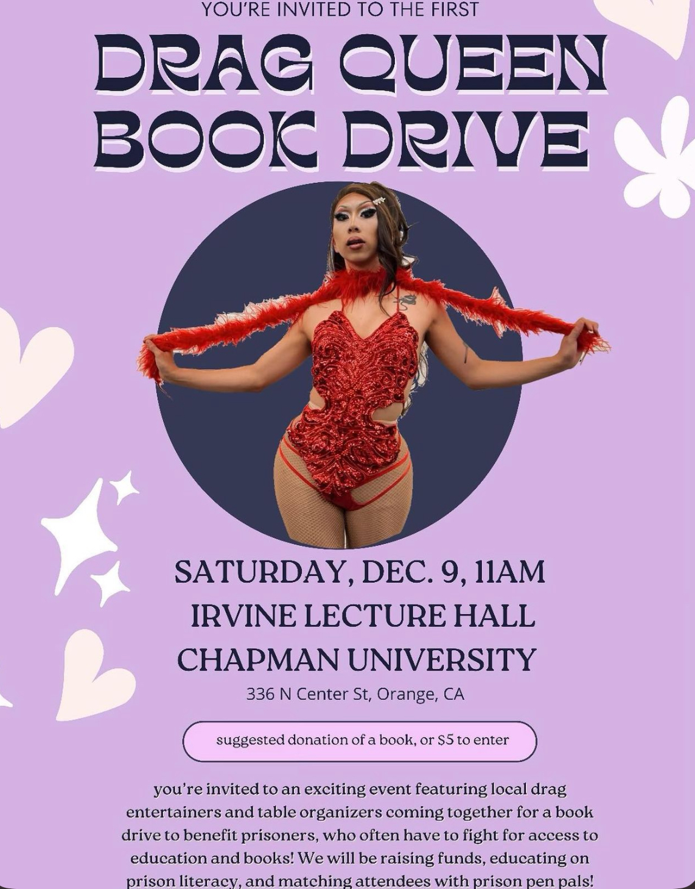
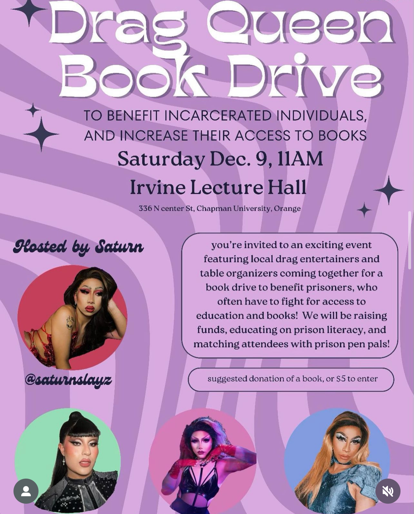

As part of the Peace Studies Major Department's innovative outreach initiatives, I had the unique opportunity to co-organize an unforgettable drag event dedicated to promoting prison literacy. This event was not only a celebration of diversity and self-expression through the vibrant art of drag but also a powerful platform to raise awareness and support for educational programs within the prison system.
By bringing together students, faculty, and community members, we created an inclusive space that highlighted the transformative power of education and the arts in addressing social injustices. The proceeds from this event went directly to support literacy programs, providing essential resources and opportunities for incarcerated individuals to pursue education and personal growth. This experience was a profound reminder of the impact collective action can have on fostering peace and understanding, reinforcing the core values of our Peace Studies department.
